Практичний досвід · журнал «ДентАрт» 2025 №4
Тимчасова сепарація зубів для мікроінвазивної діагностики і менеджменту карієсу Класу III
TEMPORARY TOOTH SEPARATION FOR MINIMALLY INVASIVE DIAGNOSIS AND MANAGEMENT OF CLASS III CARIES
Станіслав Самокиш, приватна клініка «Центр Стоматології МК» (м. Одеса, Україна); нині мешкає в м. Сакраменто, Каліфорнія, СШАРезюме. Мікроінвазивна стоматологія відкриває нові можливості для ефективного і щадного лікування карієсу контактних поверхонь. У статті представлено клінічний підхід до лікування уражень Класу III з використанням техніки тимчасової сепарації зубів і операційного мікроскопа. Метод дозволяє проводити лікування швидко, комфортно для пацієнта, з мінімальною втратою здорових тканин. Ключові акценти – мікроінвазивність, ефективний тайм-менеджмент, збереження емалі і прогнозований естетичний результат.
Ключові слова: мікроінвазивна стоматологія, карієс Класу III, сепаратор, мінімальне препарування, пряма реставрація, тимчасова сепарація зубів.
Іноді пацієнт запитує: «Докторе, у мене є карієс між зубами?». І мушу зізнатися, буває, що я не можу одразу дати відповідь – ні огляд, ні знімок не допомагають. Саме в таких випадках цей метод стає ідеальним рішенням.
Лікування карієсу центральних зубів – завжди випробування для стоматолога. Діагностика таких уражень часто теж викликає труднощі. Усім знайома ситуація, коли карієс між зубами ще непомітний ні при огляді, ні на знімку, однак він уже клінічно розвивається.
Буває, що заради доступу до невеликого каріозного вогнища доводиться втрачати значно більше здорових тканин, ніж вимагає сам дефект.
Кілька років тому я ознайомився з делікатною і малопопулярною методикою, яка дозволяє лікувати такого типу карієс швидко, ефективно і передбачувано. Цей метод найефективніший при роботі з однокореневими зубами. Премоляри також підходять, а застосування методики на молярах можна вважати досить травматичним через специфіку сепарування.
Дозвольте розповісти про сутність цієї техніки, її переваги й обмеження, а також перелік необхідних матеріалів.
Оснащення і матеріали
- Оптика – бінокуляри з великим збільшенням або, як у моєму випадку, операційний мікроскоп.
- Основний інструмент – сепаратор Ivory (мій вибір), також відомий як гвинтовий сепаратор. Альтернативою може бути сепаратор Elliot, частіше застосовуваний у жувальній групі зубів.
- Текучий композит High Flow (з високою текучістю), наприклад Estelite High Flow.
- Ендоканюля з отвором по центру (а не боковим!), достатньої товщини, щоб композит можна було стабільно видавити.
Ключові етапи методики
- Діагностика – ретельний візуальний огляд при якісному освітленні + прицільний рентгенівський знімок з ідеальним позиціонуванням. Додатково можна використати Kavo Diagnocam або трансілюмінесценцію.
- Анестезія – інфільтраційна та інтерпроксимальна (у періодонтальну зв'язку). Основне навантаження припадає саме на цю ділянку, тому слід дати 5–7 хвилин для повного знеболення.
- Установка сепаратора – поступове розклинювання протягом кількох хвилин. Важливо не форсувати процес, щоб уникнути незворотної травми колової зв'язки.
- Аналіз – після достатнього розходження зубів можна оцінити обсяг ураження. Якщо наявність карієсу не підтверджується, ми обережно розкручуємо сепаратор назад і повідомляємо пацієнту хорошу новину.
- Препарування – найзручніше виконувати маленьким алмазним бором (кулястим, на довгій ніжці). Препарування мінімально інвазивне, карієсорієнтоване, без скосу на емалі.
- Адгезивний протокол – я віддаю перевагу універсальним адгезивам (7 покоління і вище), оскільки вони утворюють надзвичайно тонку плівку, яку легко контролювати і видаляти при надлишку. Для нанесення використовую мікробраші мінімального розміру в поєднанні з тонкими пензликами.
- Відновлення дефекту – оскільки найчастіше робота ведеться в межах емалі, відтінок не має вирішального значення. Ключовим є застосування саме high flow композитів: якщо залишити чіткі краї без скосу, матеріал рівномірно заповнює простір і формує акуратну реставрацію.
- Фінішна обробка – полірування паперовими штрипсами середньої і низької абразивності, доведення до блиску дрібними полірами і дисками на низьких обертах.
- Завершення – повільне розкручування сепаратора (близько 2 хвилин), фотографування результату й оцінка роботи. Отримуємо естетичну, функціональну, точну і мінімально інвазивну реставрацію.
Важливі зауваження
Метод демонструє відмінні результати тільки при делікатній сепарації і повазі до періодонтальної зв'язки. Не слід передержувати зуби в розведеному стані. І, безумовно, обов'язково велике збільшення.
Клінічний приклад 1
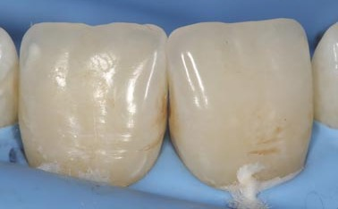
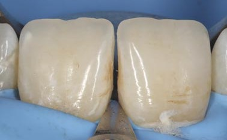
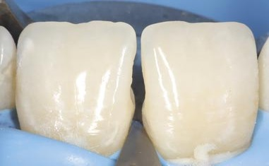
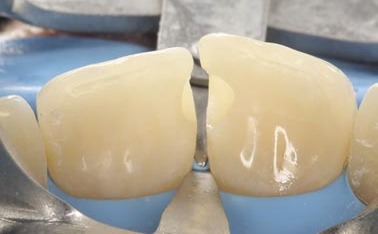
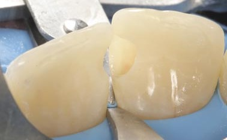
При візуальному огляді визначається каріозна порожнина між центральними різцями. Проведено анестезію та ізоляцію робочого поля за допомогою рабердама.
Виконано делікатну сепарацію зубів для забезпечення доступу до міжзубного простору.
Препарування ураження виконано кулястим бором на довгій ніжці з основним доступом з піднебінної поверхні.
Піднебінний ракурс – візуалізація меж препарування. Альтернативний ракурс для оцінки глибини порожнини.
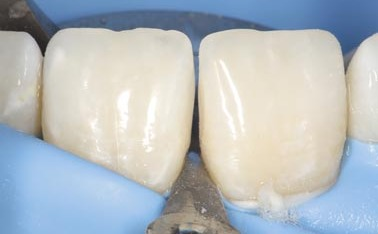
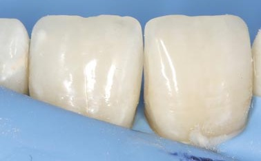
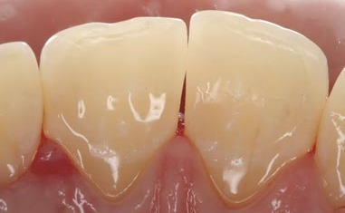
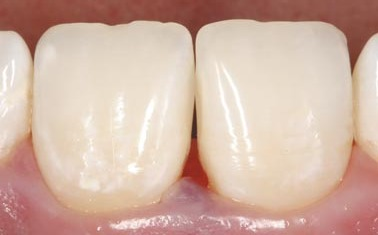
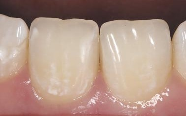
Відновлення виконано за допомогою високотекучого композиту (high flow).
Після полірування реставрації сепаратор обережно демонтований. Рабердам знято. Піднебінний вигляд завершеної реставрації.
Вигляд зубів одразу після лікування. Міжзубний сосочок тимчасово сплощений через тиск сепаратора. Для зменшення травматизації сепарацію проводять у короткому часовому інтервалі.
Через тиждень після лікування спостерігається інтеграція реставрації і відновлення міжзубного сосочка.
Клінічний приклад 2
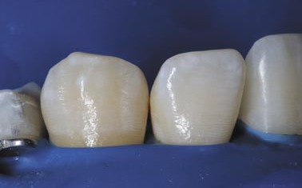
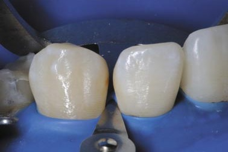
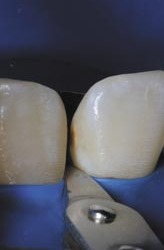
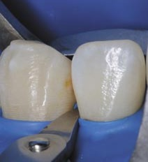
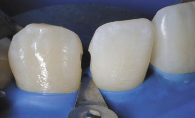
Вихідна ситуація. Карієс не простежується на рентгенограмі, але клінічно можна запідозрити його наявність через легку пігментацію і трохи змінений відтінок зубів апроксимально.
Після сепарації чітко візуалізуються каріозні порожнини в ділянці контактних поверхонь зубів.
Фото з мезіальною і дистальною ангуляцією, структура емалі крихка з темно-жовтою пігментацією.
Препарування виконано малими кулястими борами діаметром 0,6 і 0,8 мм на довгій ніжці – мінімально інвазивна, контрольована техніка.
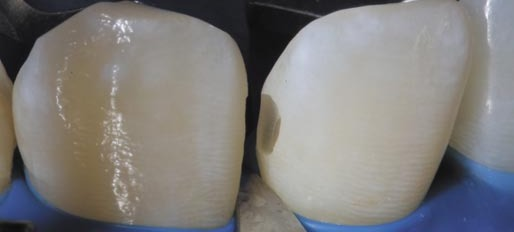
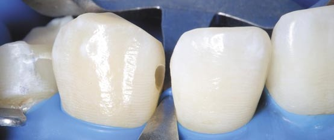
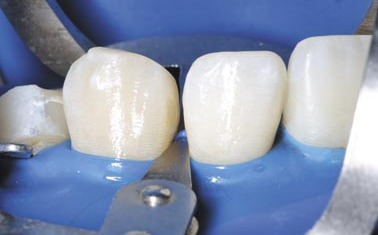
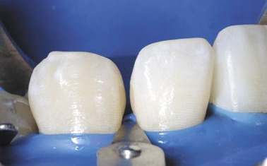
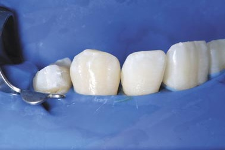
У латеральному різці ураження дещо перетнуло емалево-дентинну межу, хоча рентгенологічно воно не визначалося.
В іклі ураження поверхневе, обмежене межами емалі без переходу на дентин.
Відновлення виконано за допомогою високотекучого композиту відтінку А2 боді (high flow).
Відновлення завершено. Надлишок композиту в ділянці латерального різця усунено лезом 12D. Проведено повітряно-абразивне полірування порошком EMS Plus (14 μm). Після полірування реставрації сепаратор обережно демонтований.
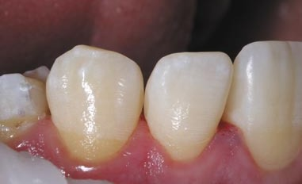
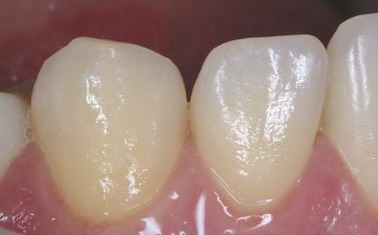
Вигляд зубів одразу після лікування: відновлені контактна точка і природний контур емалі.
Через тиждень після лікування – стабільний стан м'яких тканин, інтеграція відтінку реставрації з емаллю.
Висновок
У підсумку ця техніка справді цікава, перспективна і доступна для повсякденної практики. Вона не потребує дорогого обладнання, а основною інвестицією, по суті, залишається якісна оптика. Отримані результати передбачувані, стабільні і цілком реалістичні для впровадження навіть у завантаженому клінічному графіку.
Водночас хочу ще раз відзначити ключову роль попередньої діагностики. Прицільні знімки з правильною ангуляцією, виконані з позиціонером – фундамент успішного клінічного рішення. Не менш важливою складовою є комунікація з пацієнтом: чітке, зрозуміле і доступне пояснення процедури, усвідомлення можливих сценаріїв – від необхідності реставрації, якщо дефект підтвердиться, до простого повернення зубів у вихідне положення, якщо ураження не буде виявлено.
Цей метод дуже корисний навіть як діагностичний інструмент у ситуаціях, коли ми справді сумніваємося і не можемо дати остаточну відповідь, поки не побачимо інтерпроксимальний простір безпосередньо після сепарації. Важливо заздалегідь попередити пацієнта про можливий короткочасний дискомфорт, особливо під час жування, адже пародонтальна зв'язка зазнає мінімальної травми. Це абсолютно нормальна реакція, і повне відновлення відбувається природним шляхом.
Наостанок хочу підкреслити ще одну важливу ідею: прагнення до мінімальної інвазії там, де це клінічно доцільно і де немає потреби жертвувати здоровими тканинами зуба. Акуратний, точний, продуманий підхід дозволяє отримати доступ до ураження без надмірного препарування – і саме це, на мій погляд, є сучасним стандартом відповідальної стоматології.
Стоматологія сьогодні розвивається дуже динамічно, щороку з'являються нові матеріали, інструменти і клінічні підходи. Це природний процес, і тому дуже важливо залишатися відкритим до всього нового і перспективного – не заради моди чи «інноваційності», а заради здорового глузду, точності і бажання робити для пацієнта максимально щадний і обґрунтований вибір.